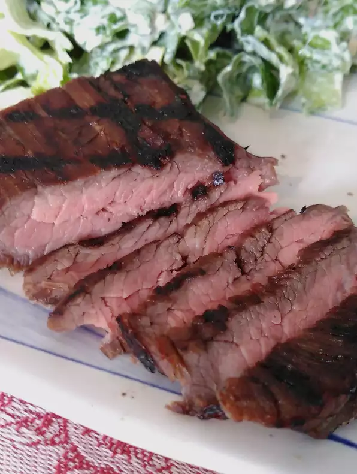

Sous Vide Steak Recipie

This marinated flank steak turns out incredibly tender if cooked sous vide. I like to grill it afterwards for a couple of minutes for extra flavor.
Ingredients
- 2 tablespoons low-sodium soy sauce (such as Bragg)
- 2 tablespoons honey
- 2 tablespoons olive oil
- 1 clove garlic, finely chopped
- 1 tablespoon red wine vinegar
- 1 (8 ounce) flank steak (about 1" thick
Steps
- Cut off any surface fat from the steak.
- Combine soy sauce, honey, olive oil, vinegar, and garlic in a flat glass dish. Add steak and marinate in the refrigerator for 5 hours, turning occasionally.
- Place a heat-resistant pad underneath a large pot filled with water. Attach a sous vide precision cooker to the pot and set temperature to 140 degrees F (60 degrees C). Set timer for 3 hours.
- Remove the steak from the marinade and shake off excess liquid. Place into a bag and vacuum seal or use the water emersion method to remove all air.
- When timer is up, remove steak from the pot and pat dry with a paper towel.
- Preheat an outdoor grill for high heat and lightly oil the grate. Place steak on the hot grill and grill on one side for 2 to 3 minutes. Cut in half and serve.